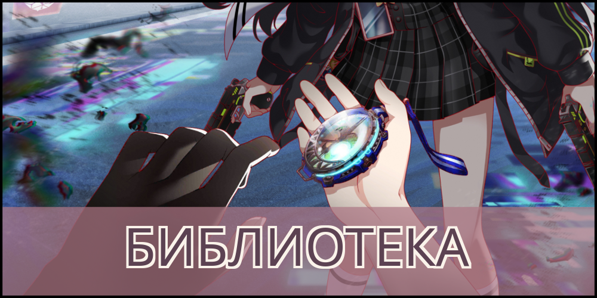
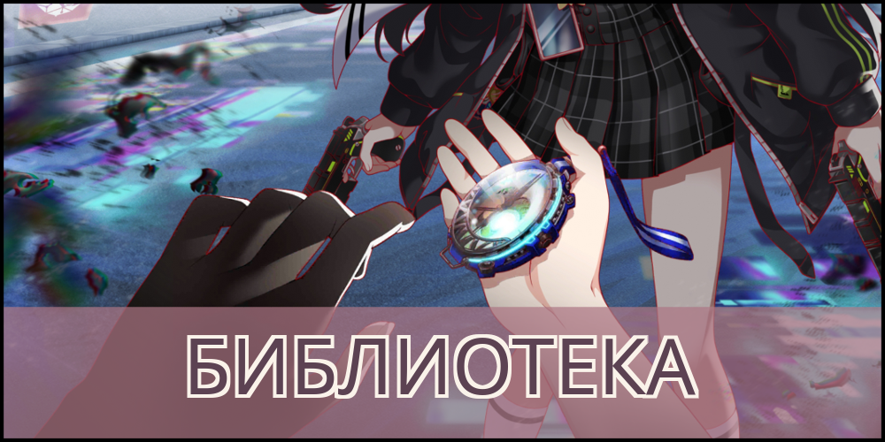

ALICE Fiction - игра, разработанная компанией
WonderPlanet. Место действий происходит в виртуальном мире, известном как АЛИСА, где множество аватаров
взаимодействуют как с другими, так и с фольклорами - объединение данных об определенных
исторических и мифологических персонажах, которые объединились в новую форму внутри АЛИСЫ и обрели разум.
Большая часть АЛИСЫ управляется Королевой, высокоразвитым ИИ с возможностями самообучения.
Сервера игры закрыли 30-го сентября 2024 года.
С 30-го августа 2023 года игра перешла в режим поддержки. В это время были повторы уже
имеющихся ивентов и баннеров.
О прекращении обслуживания объявили 30-го августа 2024 года в социальных сетях и внутри игры. 30-го сентября 2024 года
сервера закрыли.
В сообщении внутри игры говорилось:
"Спасибо вам, что наслаждаетесь Alice Fiction! Команда Alice Fiction с большим трудом приняла решение прекратить обслуживание.
Мы очень благодарны этому поддерживающему и яркому сообществу, которое поддерживало жизнь Alice Fiction, и с тяжелым сердцем обращаемся
ко всем вам с решением прекратить обслуживание.
Пожалуйста, ознакомьтесь с уведомлением "[Важное] Объявление о прекращении предоставления услуг" в разделе "Информация и ошибки"
для получения подробной информации о графике, включая возврат средств.
Мы надеемся, что за короткий промежуток времени до окончания обслуживания вы продолжите наслаждаться всем, что мы создали вместе за этот
замечательный год жизни Alice Fiction."
- От команды Alice Fiction